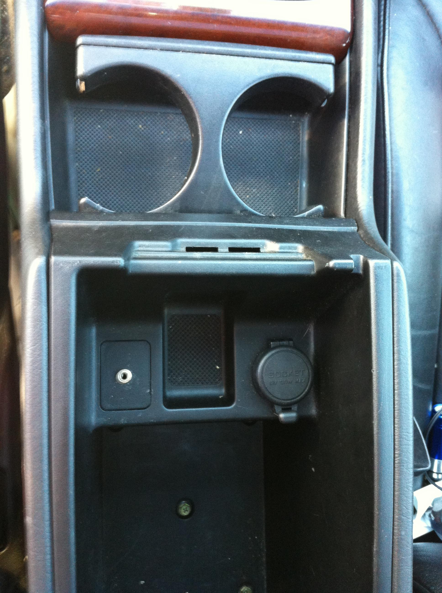
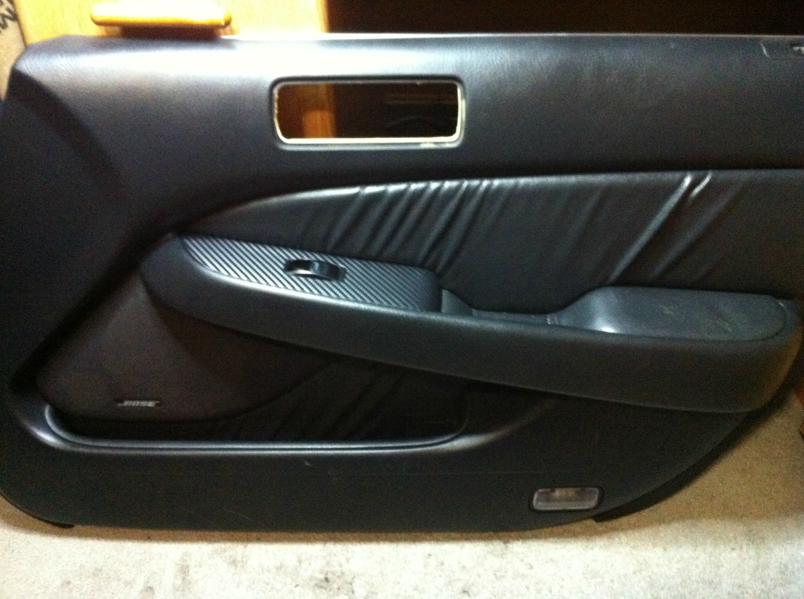
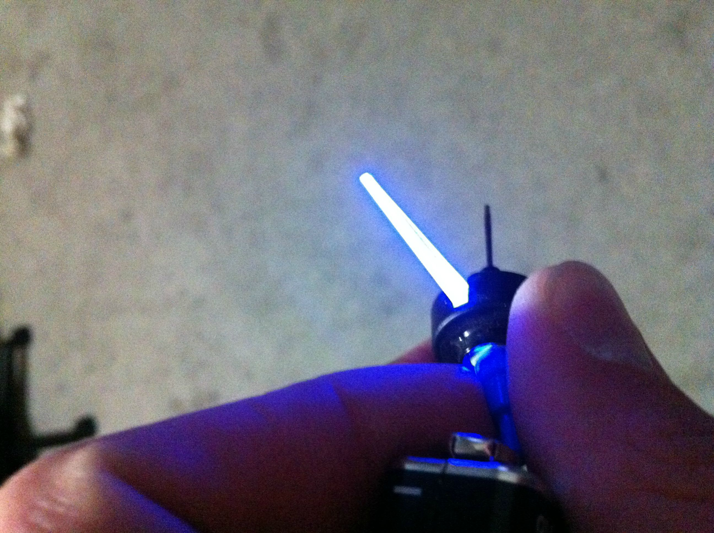

I bought my first car off my Grandmother. It’s a 1999 Acura 3.5RL in rough condition. I’ve owned it for about 3 years now and only done a few small mods to it since. Over this winter I plan on restoring it bit by bit to get it back to it’s former glorly.

The photos don’t really do it justice but the car has scratches and was missing paint all over the bumpers. The grill had bubbling chrome and the interior was pretty dirty.
Mods
The RL comes factory with a 6 CD changer in the trunk. The Bose sound system sounds pretty nice but I was tired of having to burn CDs and the CD player would skip on bumpy roads. There wasn’t any off the shelf solutions for adding in an aux port so I ended up dissecting the CD player and soldering in component cables that I could hook an aux port up to. I’m happy with how it came out as the install looks almost factory.

I also wrapped the wood grain with carbon fiber.

And wrapped the door panels as well.

Currently I’m working on custom lighting in the dash cluster.
